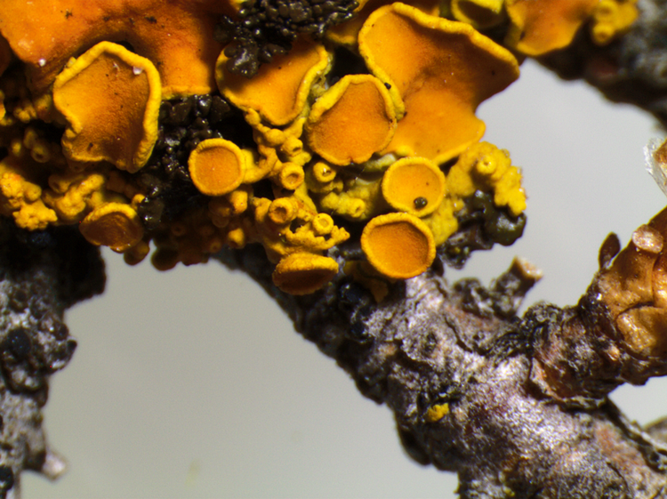

Outreach
- 2024. Webinar:Asociacionismo y carrera investigadora en el contexto de la nueva LOSU. #YoSigoUGR platform managed by Vicerrectorado de Investigación y Transferencia, Escuela Internacional de Posgrado, Universidad de Granada.
- 2024. Speaker at "La Voz de la Mujer STEM" organised by La Voz de Galicia and VIAQUA in high schools.
- 2023. Organiser of "Jornadas Cultura Laboral en Investigación-CLI" conference on working culture in research for Spanish researchers and InvestiGal' speaker at the labour rights panel
- 2023. Participant in Podcast on research from Colectivo Burbuja titled 'Research: what is at stake'
- 2022. Organiser of "Jornadas Cultura Laboral en Investigación-CLI" conference on working culture in research for Spanish researchers
- 2022. Twitch talk with 'Balea Vermella' about the Spanish Science Law entitled 'SEN CIENCIA NON HAI FUTURO'.
- 2022. Speaker in 'A LUZ DA CIENCIA: Pensamento Científico e Xénero' Conference of the 'Coruña Provincial Council' to analyse the gender perspective in science.
- 2021. Participant in the "Autumn Edition of Somos Científicos y Científicas, ¡sácanos de aquí!" of the Fundación Española para la Ciencia y la Tecnología (FECYT) where 47 researchers from all over Spain chatted with high school students about our research and science in general.
- 2021. Spokesperson in the Committee of the Science, Innovation and Universities of the Spanish Congress of Deputies
- 2021. International Day of Women and Girls in Science 11th of February. SoilSkin project team
- 2021. Interview for a regional newspaper about the situation of women in science for 11th of February Day
- 2020. Organizer of theatre play and panel discussion for the "The International Day of Women and Girls in Science 11th of February” at the Faculty of Biology of USC
- 2019. Organizer of informative session and practical workshop with high school students: "Empleo de Biocrust de musgos como fijadores de dióxido de carbono en ambientes urbanos de Galicia”
- 2017. European Researchers' Night participant, Pavilhão do Conhecimento Centro Ciência Viva de Lisboa (Portugal) : Cruz de Carvalho R., Varela Z., Serrano H., "Telhados de musgo contra a alterações climáticas”
- 2014. Scientific disclosure article: Zulema Varela Río. Líquenes: Vigías Ambientales. Investigación y Ciencia. pp. 44 - 45. Prensa Científica S.A. ISSN 0210-136X Depósito legal: B-38999-76.
- 2014. Finalist with the photographic work "Vixías Ambientais” in the scientific and technological visual art competition "InvestigArte" organized by Fundación Barrié, Universidad de Santiago de Compostela, Universidade da Coruña, Fundación Ramón Domínguez.
